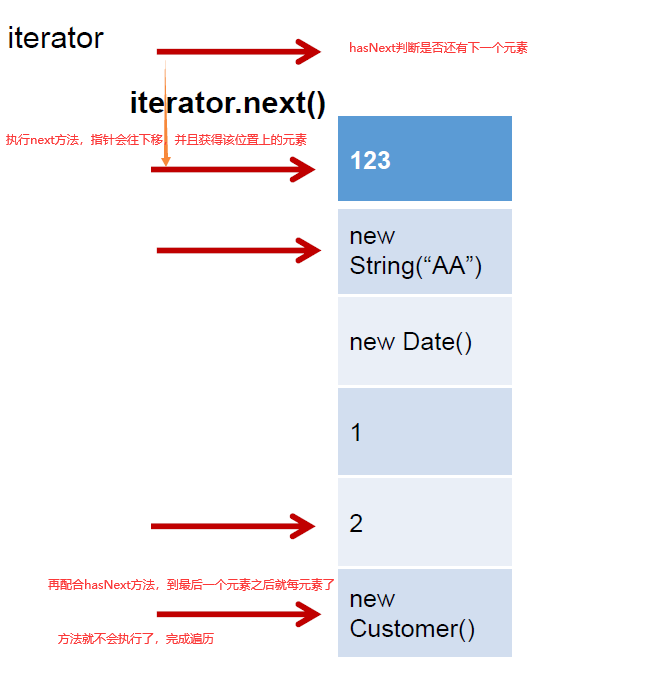
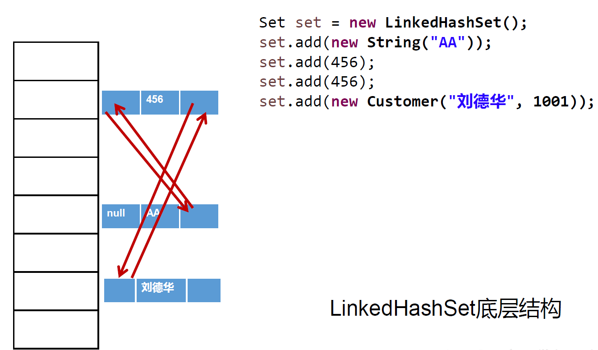
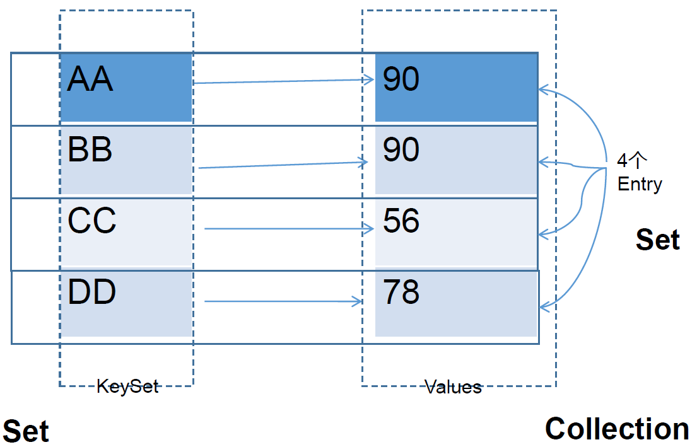
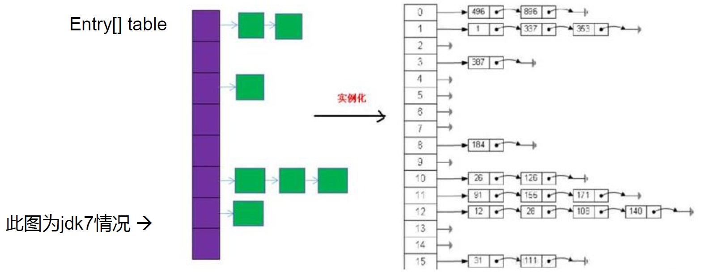
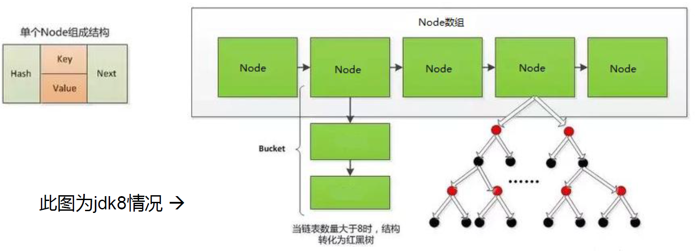
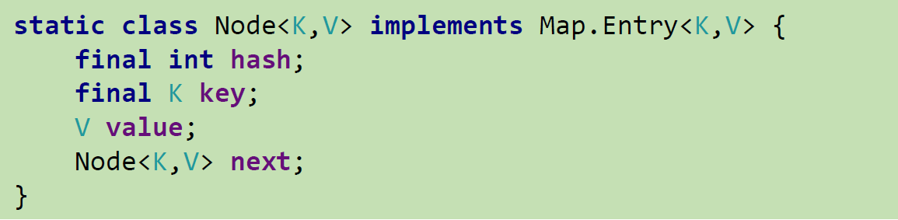
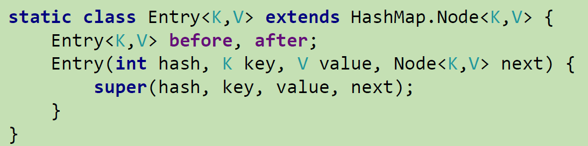

课程：宋红康JAVA
集合框架的概述
集合、数组都是对多个数据进行存储操作的结构，简称Java容器。说明：此时的存储，主要指的是内存层面的存储，不涉及到持久化的存储（.txt,.jpg,.avi，数据库中）
数组的特点与缺点
- 数组在存储多个数据方面的特点：
- 一旦初始化以后，其长度就确定了。
- 数组一旦定义好，其元素的类型也就确定了。我们也就只能操作指定类型的数据了（无法使用多态性）。比如：String[] arr;int[] arr1;Object[] arr2（只有Object[]符合多态性）;
- 数组在存储多个数据方面的缺点
- 一旦初始化以后，其长度就不可修改。
- 数组中提供的方法非常有限，对于添加、删除、插入数据等操作，非常不便，同时效率不高。
- 获取数组中实际元素的个数的需求，数组没有现成的属性或方法可用
- 数组存储数据的特点：有序、可重复。对于无序、不可重复的需求，不能满足。
- 数组在存储多个数据方面的特点：
集合框架
Collection接口：单列集合，用来存储一个一个的对象
List接口：存储有序的、可重复的数据。 –>“动态”数组。
包括：ArrayList、LinkedList、Vector
Set接口：存储无序的、不可重复的数据 –>数学中的“集合”
包括：HashSet、LinkedHashSet、TreeSet
Map接口：双列集合，用来存储一对(key - value)一对的数据 –>高中函数：y = f(x)
包括：HashMap、LinkedHashMap、TreeMap、Hashtable、Properties
Collection接口中的方法的使用
add(Object e):将元素e添加到集合coll中
size():获取添加的元素的个数
addAll(Collection coll1):将coll1集合中的元素添加到当前的集合中
clear():清空集合元素
isEmpty():判断当前集合是否为空,就是判断集合里面是不是有元素
contains(Object obj):判断当前集合中是否包含obj，比较的是内容而不是地址值
在判断时会调用obj对象所在类的equals()。
—>要求我们自定义的类要重写equals方法，否则无法比较，结果总是false
contains方法会按照顺序调用equals方法，直到找到一个内容一致的，就会停止
public void test1(){ Collection coll = new ArrayList(); //add(Object e):将元素e添加到集合coll中 coll.add("AA"); coll.add("BB"); coll.add(123);//自动装箱 coll.add(new Date()); //size():获取添加的元素的个数 System.out.println(coll.size());//4 //addAll(Collection coll1):将coll1集合中的元素添加到当前的集合中 Collection coll1 = new ArrayList(); coll1.add(456); coll1.add("CC"); coll.addAll(coll1); System.out.println(coll.size());//6 System.out.println(coll); //clear():清空集合元素 coll.clear(); //isEmpty():判断当前集合是否为空,就是判断集合里面是不是有元素 System.out.println(coll.isEmpty()); } @Test public void test123(){ Collection coll = new ArrayList(); coll.add(123); coll.add(456); coll.add(new Person("Jerry",20)); coll.add(new String("Tom")); coll.add(false); System.out.println(coll); boolean contains = coll.contains(123); System.out.println(contains);//true System.out.println(coll.contains(new String("Tom")));//true System.out.println(coll.contains(new Person("Jerry",20)));//true //2.containsAll(Collection coll1):判断形参coll1中的所有元素是否都存在于当前集合中。 Collection coll1 = Arrays.asList(123,4567); //相当于创建一个集合，然后往里面添加‘123’和‘4567’两个元素 System.out.println(coll.containsAll(coll1));//false } // 需要重写Person的equals方法；idea可以自动生成 @Override public boolean equals(Object o) { System.out.println("------------Person.equals-------------"); if (this == o) return true; if (o == null || getClass() != o.getClass()) return false; Person person = (Person) o; return age == person.age && Objects.equals(name, person.name); } /** 打印结果： [123, 456, Person{name='Jerry', age=20}, Tom, false] true true ------------Person.equals------------- ------------Person.equals------------- ------------Person.equals------------- true false ------------------- 这里有一个问题：为什么等到了所以contains方法执行完之后才打印出 Person.equals？◐◐◐ */remove(Object obj):从当前集合中移除obj元素。返回一个Boolean类型的值，删除成功（true）删除失败（false）。
removeAll(Collection coll1):求差集：从当前集合中移除coll1中所有的元素。
@Test public void test2(){ Collection coll = new ArrayList(); coll.add(123); coll.add(456); coll.add(new Person("Jerry",20)); coll.add(new String("Tom")); coll.add(false); coll.remove(1234); System.out.println(coll); coll.remove(new Person("Jerry",20)); System.out.println(coll); Collection coll1 = Arrays.asList(123,456); coll.removeAll(coll1); System.out.println(coll); } /** 打印结果： [123, 456, Person{name='Jerry', age=20}, Tom, false] ------------Person.equals------------- ------------Person.equals------------- ------------Person.equals------------- [123, 456, Tom, false] [Tom, false] 我的疑问：◐◐◐ 1-首先可以明确的是remove和removeAll也要执行equals方法 2-可数为什么执行了3次 3-而且debug的时候，发现是等所有代码都执行完了，再去执行equals方法 */retainAll(Collection coll1):求交集：获取当前集合和coll1集合的交集，并返回给当前集合。也就是说删掉当前集合种与coll1集合不一致的元素
@Test public void test31(){ Collection coll = new ArrayList(); coll.add(123); coll.add(456); coll.add(new Person("Jerry",20)); coll.add(new String("Tom")); coll.add(false); //5.retainAll(Collection coll1):交集：获取当前集合和coll1集合的交集，并返回给当前集合 Collection coll1 = Arrays.asList(123,456,789,889); coll.retainAll(coll1); System.out.println(coll); /** 打印结果 * ------------Person.equals------------ * ------------Person.equals------------ * ------------Person.equals------------ * ------------Person.equals------------ * [123, 456] * retainAll也调用了equals方法 * */ }equals(Object obj):要想返回true，需要当前集合和形参集合的元素都相同。同时要考虑有序无序的影响（new 的对象）
@Test public void test32(){ Collection coll = new ArrayList(); coll.add(123); coll.add(456); coll.add(new Person("Jerry",20)); coll.add(new String("Tom")); coll.add(false); //6.equals(Object obj):要想返回true，需要当前集合和形参集合的元素都相同。 //同时要考虑有序无序的影响（new 的对象） Collection coll2 = new ArrayList(); coll2.add(123); coll2.add(456); //coll2.add(123); //如果 123 放在 456后面，就会返回false，因为顺序不一样 coll2.add(new Person("Jerry",20)); coll2.add(new String("Tom")); coll2.add(false); System.out.println(coll.equals(coll2)); }hashCode():返回当前对象的哈希值
集合 —>数组：toArray()
@Test public void test4(){ Collection coll = new ArrayList(); coll.add(123); coll.add(456); coll.add(new Person("Jerry",20)); coll.add(new String("Tom")); coll.add(false); //7.hashCode():返回当前对象的哈希值 System.out.println(coll.hashCode()); //8.集合 --->数组：toArray() Object[] arr = coll.toArray(); for(int i = 0;i < arr.length;i++){ System.out.println(arr[i]); } //拓展：数组 --->集合:调用Arrays类的静态方法asList() List<String> list = Arrays.asList(new String[]{"AA", "BB", "CC"}); System.out.println(list.size());//3 System.out.println(list);//[AA, BB, CC] // 对于基本类型的数组，会把这个数组看成是一个整体 List arr1 = Arrays.asList(new int[]{123, 456}); System.out.println(arr1.size());//1--->也就是把new int[]看成了一个整体 List arr2 = Arrays.asList(new Integer[]{123, 456}); System.out.println(arr2.size());//2 }使用lterator 接口遍历集合元素
Iterator对象称为迭代器(设计模式的一种)， 主要用于遍历Collection集合中的元素。
GOF给迭代器模式的定义为：提供一种方法访问一个容器(container)对象中各个元素，而又不需暴露该对象的内部细节。迭代器模式，就是为容器而生。
Collection接口继承了
java.lang.lterable接口，该接口有一个iterator()方法，那么所有实现了Collection接口的集合类都有一个iterator()方法，用以返回一个实现了Iterator接口的对象。Iterator仅用于遍历集合，Iterator本身并不提供承装对象的能力。如果需要创建Iterator对象，则必须有一个被迭代的集合。
集合对象每次调用iterator()方法都得到一个全新的迭代器对象，默认游标都在集合的第一个元素之前。
@Test public void test1(){ Collection coll = new ArrayList(); coll.add(123); coll.add(456); coll.add(new Person("Jerry",20)); coll.add(new String("Tom")); coll.add(false); Iterator iterator = coll.iterator(); //方式一： // System.out.println(iterator.next()); // System.out.println(iterator.next()); // System.out.println(iterator.next()); // System.out.println(iterator.next()); // System.out.println(iterator.next()); // //报异常：NoSuchElementException,因为超过了 // System.out.println(iterator.next()); //方式二：不推荐 // for(int i = 0;i < coll.size();i++){ // System.out.println(iterator.next()); // } //方式三：推荐 ////hasNext():判断是否还有下一个元素 while(iterator.hasNext()){ //next():①指针下移 ②将下移以后集合位置上的元素返回 System.out.println(iterator.next()); } }Ilterator 的两种错误方式
@Test public void test2(){ Collection coll = new ArrayList(); coll.add(123); coll.add(456); coll.add(new Person("Jerry",20)); coll.add(new String("Tom")); coll.add(false); //错误方式一： // Iterator iterator = coll.iterator(); // while((iterator.next()) != null){ // System.out.println(iterator.next()); // } // 种方首先会跳着执行，其次到最后那个会报NoSuchElementException //错误方式二： //集合对象每次调用iterator()方法都得到一个全新的迭代器对象， // 默认游标都在集合的第一个元素之前。 //这种方式会出现死循环 while (coll.iterator().hasNext()){ System.out.println(coll.iterator().next()); } }Iterator中的remove()
public void test3(){ Collection coll = new ArrayList(); coll.add(123); coll.add(456); coll.add(new Person("Jerry",20)); coll.add(new String("Tom")); coll.add(false); //删除集合中"Tom" Iterator iterator = coll.iterator(); while (iterator.hasNext()){ // iterator.remove();还没调next方法，还没有获取对象，无法删除 Object obj = iterator.next(); if("Tom".equals(obj)){ iterator.remove(); //iterator.remove();//上面已经产出过来，就每办法再删除了 } } //遍历集合 iterator = coll.iterator(); while (iterator.hasNext()){ System.out.println(iterator.next()); } }迭代器的执行原理
jdk 5.0 新增了foreach循环，用于遍历集合、数组
@Test public void test1(){ Collection coll = new ArrayList(); coll.add(123); coll.add(456); coll.add(new Person("Jerry",20)); coll.add(new String("Tom")); coll.add(false); //for(集合元素的类型 局部变量 : 集合对象) //内部仍然调用了迭代器。 for(Object obj : coll){ System.out.println(obj); } } @Test public void test3(){ String[] arr = new String[]{"MM","MM","MM"}; // //方式一：普通for赋值--->赋值成功 // for(int i = 0;i < arr.length;i++){ // arr[i] = "GG"; // } //方式二：增强for循环--->赋值失败， // 因为 s = "GG" 赋值是赋值给局部变量String s for(String s : arr){ s = "GG"; } for(int i = 0;i < arr.length;i++){ System.out.println(arr[i]); } }
Collection子接口之一:List接口
List接口概述
- 鉴于Java中数组用来存储数据的局限性，我们通常使用List替代数组
- List集合类中元素有序、且可重复，集合中的每个元素都有其对应的顺序索引。
- List容器中的元素都对应一个整数型的序号记载其在容器中的位置，可以根据序号存取容器中的元素。
- JDK API中List接口的实现类常用的有: ArrayList、LinkedList和Vector。
- 相同点：三个类都是实现了List接口，存储数据的特点相同：存储有序的、可重复的数据
- 不同点：
- ArrayList：作为List接口的主要实现类；线程不安全的，效率高；底层使用
Object[]elementData存储 - LinkedList：对于频繁的插入、删除操作，使用此类效率比ArrayList高；底层使用双向链表存储
- Vector：作为List接口的古老实现类；线程安全的，效率低；底层使用
Object[]elementData存储
- ArrayList：作为List接口的主要实现类；线程不安全的，效率高；底层使用
ArrayList的源码分析
jdk 7情况下
ArrayList list=new ArrayList();//底层创建了长度是10的Object[]数组elementData
/*********************************以下源码****************************************/
/**【空参构造】
* Constructs an empty list with an initial capacity of ten.
*/
public ArrayList() {
this(10);
}
/**【有初始容量的构造器】
* Constructs an empty list with the specified initial capacity.
* @param initialCapacity the initial capacity of the list
* @throws IllegalArgumentException if the specified initial capacity
* is negative
*/
public ArrayList(int initialCapacity) {
super();
if (initialCapacity < 0)
throw new IllegalArgumentException("Illegal Capacity: "+initialCapacity);
this.elementData = new Object[initialCapacity];
}
/*********************************以上源码*****************************************/
list.add(123);//elementData[0] = new Integer(123);
//...
list.add(11);//如果此次的添加导致底层elementData数组容量不够，则扩容。
//默认情况下，扩容为原来的容量的1.5倍，同时需要将原有数组中的数据复制到新的数组中。
//结论：建议开发中使用带参的构造器：ArrayList list = new ArrayList(int capacity)
/*********************************以下源码****************************************/
public boolean add(E e) {
ensureCapacityInternal(size + 1); // Increments modCount!!
//size++:后++是先取值（elementData[0]=e，后自增(size=0+1)
elementData[size++] = e;
return true;
}
private void ensureCapacityInternal(int minCapacity) {
modCount++;
// overflow-conscious code
if (minCapacity - elementData.length > 0)
grow(minCapacity);
}
private void grow(int minCapacity) {
// overflow-conscious code
int oldCapacity = elementData.length;
//newCapacity=oldCapacity+oldCapacity/2=1.5oldCapacity
int newCapacity = oldCapacity + (oldCapacity >> 1);
//当newCapacity 小于minCapacity时，就让最小容量minCapacity时等于新的容量
if (newCapacity - minCapacity < 0)
newCapacity = minCapacity;
//当newCapacity超过MAX_ARRAY_SIZE时，
//private static final int MAX_ARRAY_SIZE = Integer.MAX_VALUE - 8;
// 在integer类中：public static final int MAX_VALUE = 0x7fffffff;
//0x7fffffff：十六进制的111...111
if (newCapacity - MAX_ARRAY_SIZE > 0)
newCapacity = hugeCapacity(minCapacity);
// minCapacity is usually close to size, so this is a win:
elementData = Arrays.copyOf(elementData, newCapacity);
}
private static int hugeCapacity(int minCapacity) {
if (minCapacity < 0) // overflow
throw new OutOfMemoryError();
return (minCapacity > MAX_ARRAY_SIZE) ? Integer.MAX_VALUE : MAX_ARRAY_SIZE;
}
/*********************************以上源码*****************************************/
jdk8中ArrayList的变化
ArrayList list = new ArrayList();//底层Object[] elementData初始化为{}.并没有创建长度为10的数组
/*********************************以下源码****************************************/
public ArrayList() {
this.elementData = DEFAULTCAPACITY_EMPTY_ELEMENTDATA;
}
private static final Object[] DEFAULTCAPACITY_EMPTY_ELEMENTDATA = {};
/*********************************以上源码*****************************************/
list.add(123);//第一次调用add()时，底层才创建了长度10的数组，并将数据123添加到elementData[0]
//…
//后续的添加和扩容操作与jdk7无异。
/*********************************以下源码****************************************/
public boolean add(E e) {
ensureCapacityInternal(size + 1); // Increments modCount!!
elementData[size++] = e;
return true;
}
private void ensureCapacityInternal(int minCapacity) {
ensureExplicitCapacity(calculateCapacity(elementData, minCapacity));
}
private static int calculateCapacity(Object[] elementData, int minCapacity) {
//在第一次添加元素时，如果elementData是一个空的数组，就把elementData的容量扩展到10
if (elementData == DEFAULTCAPACITY_EMPTY_ELEMENTDATA) {
//DEFAULT_CAPACITY=10;
return Math.max(DEFAULT_CAPACITY, minCapacity);
}
return minCapacity;
}
private void ensureExplicitCapacity(int minCapacity) {
modCount++;
// overflow-conscious code
if (minCapacity - elementData.length > 0)
grow(minCapacity);
}
private void grow(int minCapacity) {
// overflow-conscious code
int oldCapacity = elementData.length;
int newCapacity = oldCapacity + (oldCapacity >> 1);
if (newCapacity - minCapacity < 0)
newCapacity = minCapacity;
if (newCapacity - MAX_ARRAY_SIZE > 0)
newCapacity = hugeCapacity(minCapacity);
// minCapacity is usually close to size, so this is a win:
elementData = Arrays.copyOf(elementData, newCapacity);
}
/*********************************以下源码****************************************/
小结：jdk7中的ArrayList的对象的创建类似于单例的饿汉式，而jdk8中的ArrayList的对象的创建类似于单例的懒汉式，延迟了数组的创建，节省内存。
LinkedList的源码分析
LinkedList list = new LinkedList(); //内部声明了Node类型的first和last属性，默认值为null
//【属性】
transient int size = 0;
transient Node<E> first;
transient Node<E> last;
//【Node是一个内部类，体现了LinkedList的双向链表的说法】
private static class Node<E> {
E item;
Node<E> next;
Node<E> prev;
Node(Node<E> prev, E element, Node<E> next) {
this.item = element;
this.next = next;
this.prev = prev;
}
}
//【创建一个空的集合】
public LinkedList() {
}
/*******************************************************************************/
list.add(123);//将123封装到Node中，创建了Node对象
public boolean add(E e) {
linkLast(e);
return true;
}
//如果E是123
void linkLast(E e) {
//如果是第一次添加，那么last就是null否则就是上一个元素
final Node<E> l = last;
// Node(Node<E> prev, E element, Node<E> next)
//null-123-null
final Node<E> newNode = new Node<>(l, e, null);
last = newNode;
//if (l == null):目的是判断是否是第一个添加的元素
//如果是第一个添加的元素，那么就first = newNode，第一个也是最后一个
if (l == null)
first = newNode;
//如果不是第一个元素，就让上一个元素的next指向添加的元素
else
l.next = newNode;
size++;
modCount++;
}
Vector的源码分析
jdk7和jdk8中通过Vector()构造器创建对象时，底层都创建了长度为10的数组。
在扩容方面，默认扩容为原来的数组长度的2倍。
//【属性】
protected Object[] elementData;
protected int elementCount;
protected int capacityIncrement;
//【构造器】
public Vector() {
this(10);
}
public Vector(int initialCapacity) {
this(initialCapacity, 0);
}
public Vector(int initialCapacity, int capacityIncrement) {
super();
if (initialCapacity < 0)
throw new IllegalArgumentException("Illegal Capacity: "+initialCapacity);
this.elementData = new Object[initialCapacity];
this.capacityIncrement = capacityIncrement;
}
//【add方法】
public synchronized boolean add(E e) {
modCount++;
ensureCapacityHelper(elementCount + 1);
elementData[elementCount++] = e;
return true;
}
private void ensureCapacityHelper(int minCapacity) {
// overflow-conscious code
if (minCapacity - elementData.length > 0)
grow(minCapacity);
}
private void grow(int minCapacity) {
// overflow-conscious code
int oldCapacity = elementData.length;
int newCapacity = oldCapacity + ((capacityIncrement > 0) ?
capacityIncrement : oldCapacity);
if (newCapacity - minCapacity < 0)
newCapacity = minCapacity;
if (newCapacity - MAX_ARRAY_SIZE > 0)
newCapacity = hugeCapacity(minCapacity);
elementData = Arrays.copyOf(elementData, newCapacity);
}
List接口中的常用方法
void add(int index, Object ele):在index位置插入ele元素boolean addAll(int index, Collection eles):从index位置开始将eles中的所有元素添加进来Object get(int index):获取指定index位置的元素int indexOf(Object obj):返回obj在集合中首次出现的位置int lastIndexOf(Object obj):返回obj在当前集合中末次出现的位置Object remove(int index):移除指定index位置的元素，并返回此元素Object set(int index, Object ele):设置指定index位置的元素为eleList subList(int fromIndex, int toIndex):返回从fromIndex到toIndex位置的子集合
public void test1(){
ArrayList list = new ArrayList();
list.add(123);
list.add(456);
list.add("AA");
list.add(new Person("Tom",12));
list.add(456);
System.out.println(list);
//void add(int index, Object ele):在index位置插入ele元素
list.add(1,"BB");
System.out.println(list);
//boolean addAll(int index, Collection eles):从index位置开始将eles中的所有元素添加进来
List list1 = Arrays.asList(1, 2, 3);
list.addAll(list1);//--->把list1里面的元素都加到list里面
// list.add(list1);//--->把list1看作一个元素都加到list里面
System.out.println(list.size());//9
//Object get(int index):获取指定index位置的元素
System.out.println(list.get(0));
}
public void test2(){
ArrayList list = new ArrayList();
list.add(123);
list.add(456);
list.add("AA");
list.add(new Person("Tom",12));
list.add(456);
//int indexOf(Object obj):返回obj在集合中首次出现的位置。如果不存在，返回-1.
int index = list.indexOf(4567);
System.out.println(index);
//int lastIndexOf(Object obj):返回obj在当前集合中末次出现的位置。如果不存在，返回-1.
System.out.println(list.lastIndexOf(456));
//Object remove(int index):移除指定index位置的元素，并返回此元素
Object obj = list.remove(0);
System.out.println(obj);
System.out.println(list);
//Object set(int index, Object ele):设置指定index位置的元素为ele
list.set(1,"CC");
System.out.println(list);
//List subList(int fromIndex, int toIndex):返回从fromIndex到toIndex位置的左闭右开区间的子集合
List subList = list.subList(2, 4);
System.out.println(subList);
System.out.println(list);
}
public void test3(){
ArrayList list = new ArrayList();
list.add(123);
list.add(456);
list.add("AA");
//方式一：Iterator迭代器方式
Iterator iterator = list.iterator();
while(iterator.hasNext()){
System.out.println(iterator.next());
}
System.out.println("***************");
//方式二：增强for循环
for(Object obj : list){
System.out.println(obj);
}
System.out.println("***************");
//方式三：普通for循环
for(int i = 0;i < list.size();i++){
System.out.println(list.get(i));
}
}
总结：常用方法
增：add(Object obj)
删：remove(int index) / remove(Object obj)
改：set(int index, Object ele)
查：get(int index)
插：add(int index, Object ele)
长度：size()
遍历：① Iterator迭代器方式② 增强for循环③ 普通的循环
Collection子接口之二：Set接口
概述
Set接口是Collection的子接口，set接 口没有提供额外的方法
Set集合不允许包含相同的元素，如果试把两个相同的元素加入同一个Set集合中，则添加操作失败。
Set判断两个对象是否相同不是使用==运算符，而是根据equals()方法
有哪些实现类
HashSet：作为Set接口的主要实现类；线程不安全的；可以存储null值HashSet的子类
LinkedHashSet：作为HashSet的子类，遍历其内部数据时，可以按照添加的顺序遍历。对于频繁的遍历操作，LinkedHashSet效率高于HashSet。TreeSet：可以按照添加对象的指定属性，进行排序
Set特点：存储无序的、不可重复的数据
- 无序性：不等于随机性。存储的数据在底层数组中并非按照数组索引的顺序添加，而是根据数据的哈希值决定的。
- 不可重复性：保证添加的元素按照equals()判断时，不能返回true.即：相同的元素只能添加一个。
HashSet
元素的添加过程（其他存储过程类似）
我们向HashSet中添加元素a,首先调用元素a所在类的hashCode()方法，计算元素a的哈希值，此哈希值接着通过某种算法计算出在HashSet底层数组中的存放位置（即为：索引位置），判断数组此位置上是否已经有元素：
- 如果此位置上没有其他元素，则元素a添加成功。—>情况1
- 如果此位置上有其他元素b(或以链表形式存在的多个元素），则比较元素a与元素b的hash值：
- 如果hash值不相同，则元素a添加成功。—>情况2
- 如果hash值相同，进而需要调用元素a所在类的equals()方法：
- equals()返回true,元素a添加失败
- equals()返回false,则元素a添加成功。—>情况2
对于添加成功的情况2和情况3而言：元素a与已经存在指定索引位置上数据以链表的方式存储。
jdk7 :元素a放到数组中，指向原来的元素。
jdk 8:原来的元素在数组中，指向元素a
总结：七上八下
底层也是数组，初始容量为16，当如果使用率超过0.75，(16*0.75=12)就会扩大容量为原来的2倍。(16扩 容为32，依次为64.182…等)
重写hashCode()方法的基本原则
- 在程序运行时，同一个对象多次调用hashCode()方法应该返回相同的值。
- 当两个对象的equals()方法比较返回true时，这两个对象的hashCode()方法的返回值也应相等。
- 对象中用作equals()方法比较的Field，都应该用来计算hashCode值。
//idea自动生成 public int hashCode() { //return name.hashCode() + age; int result = name != null ? name.hashCode() : 0; result = 31 * result + age; return result; } // String重写的hashCode public int hashCode() { int h = hash; if (h == 0 && value.length > 0) { char val[] = value; for (int i = 0; i < value.length; i++) { h = 31 * h + val[i]; } hash = h; } return h; }为什么选择31作为系数？
选择系数的时候要选择尽量大的系数。因为如果计算出来的hash地址越大，所谓的“冲突”就越少，查找起来效率也会提高。 (减少冲突)
并且31只占用5bits,相乘造成数据溢出的概率较小。
31可以由i*31== (i<<5)-1来表示，现在很多虚拟机里面都有做相关优化。(提高算法效率)
31是一个素数，素数作用就是如果我用一个数字来乘以这个素数，那么最终出来的结果只能被素数本身和被乘数还有1来整除! (减少冲突)
重写equals()方法的基本原则
- 当一个类有自己特有的“逻辑相等”概念,当改写equals()的时候，总是要改写hashCode()，根据一个类的equals方法(改写后)，两个截然不同的实例有可能在逻辑上是相等的，但是，根据Object.hashCode()方法,它们仅仅是两个对象。
- 因此，违反了“相等的对象必须具有相等的散列码”。也就是如果equals()的方法证明两个对象是相对的，那么两个对象的hash码也必须相对
- 结论：复写equals方法的时候一般都需要同时复写hashCode方法。通常参与计算hashCode的对象的属性也应该参与到equals()中进行计算。
//idea自动生成 @Override public boolean equals(Object o) { System.out.println("User equals()...."); if (this == o) return true; //如果o对象为空或者两个类不一致，就返回false if (o == null || getClass() != o.getClass()) return false; User user = (User) o; if (age != user.age) return false; return name != null ? name.equals(user.name) : user.name == null; }
LinkedHashSet
LinkedHashSet是HashSet的子类
LinkedHashSet根据元素的hashCode值来决定元素的存储位置，但它同时使用双向链表维护元素的次序，这使得元素看起来是以插入顺序保存的。
LinkedHashSet插入性能略低于HashSet，但在迭代访问Set里的全部元素时有很好的性能。
L inkedHashSet不允许集合元素重复。

TreeSet
TreeSet是SortedSet接口的实现类，TreeSet可以确保集合元素处于排序状态。
TreeSet底层使用红黑树结构存储数据
TreeSet两种排序方法:自然排序和定制排序。默认情况下，TreeSet采用自然排序。
自然排序
- 自然排序: TreeSet 会调用集合元素的**compareTo(Object obj)方法来比较元素之间的大小关系，然后将集合元素按升序(默认情况)**排列
- 如果试图把一个对象添加到TreeSet时，则该对象的类必须实现Comparable接口。实现Comparable
的类必须实现compareTo(Object obj)方法，两个对象即通过compareTo(Object obj) 方法的返回值来比较大小。而比较两个对象是否相同的标准为：compareTo()返回0.不再是equals(). - 向TreeSet中添加元素时，只有第一个元素无须比较compareTo()方法，后面添加的所有元素都会调用compareTo()方法进行比较。
- 因为只有相同类的两个实例才会比较大小，所以向TreeSet中添加的应该是同一个类的对象。
- 对于TreeSet集合而言，它判断两个对象是否相等的唯一标准是:两个对象通过compareTo(Object
obj)方法比较返回值。 - 当需要把一个对象放入TreeSet中，重写该对象对应的equals()方法时，应保证该方法与compareTo(Objectobj)方法有一致的结果:如果两个对象通过equals()方法比较返回true，则通过compareTo(Object obj)方法比较应返回0。否则，让人难以理解。
//按照姓名从大到小排列,年龄从小到大排列
@Override
public int compareTo(Object o) {
if(o instanceof User){
User user = (User)o;
// return -this.name.compareTo(user.name);
int compare = -this.name.compareTo(user.name);
if(compare != 0){//compare=0说明两个对象的名字是相对的，需要继续比较
return compare;
}else{
return Integer.compare(this.age,user.age);
}
}else{
throw new RuntimeException("输入的类型不匹配");
}
}
定制排序
- TreeSet的自然排序要求元素所属的类实现Comparable接口，如果元素所属的类没有实现Comparable 接口，或不希望按照**升序(默认情况)**的方式排列元素或希望按照其它属性大小进行排序，则考虑使用定制排序。
- 定制排序，通过Comparator接口来实现。需要重写
compare(T o1,T o2)方法。 - 利用int compare(T o1,T o2)方法，比较o1和o2的大小:如果方法返回正整数，则表示o1大于o2; 如果返回0，表示相等;返回负整数，表示o1小于o2。
- 要实现定制排序，需要将实现Comparator接口的实例作为形参传递给TreeSet的构造器
- 此时，仍然只能向TreeSet中添加类型相同的对象。否则发生ClassCastException异常。
- 使用定制排序判断两个元素相等的标准是:通过Comparator比较两个元素返回了0。
@Test
public void test2(){
Comparator com = new Comparator() {
//按照年龄从小到大排列
@Override
public int compare(Object o1, Object o2) {
if(o1 instanceof User && o2 instanceof User){
User u1 = (User)o1;
User u2 = (User)o2;
return Integer.compare(u1.getAge(),u2.getAge());
}else{
throw new RuntimeException("输入的数据类型不匹配");
}
}
};
TreeSet set = new TreeSet(com);
set.add(new User("Tom",12));
set.add(new User("Jerry",32));
set.add(new User("Jim",2));
set.add(new User("Mike",65));
set.add(new User("Mary",33));
set.add(new User("Jack",33));
set.add(new User("Jack",56));
Iterator iterator = set.iterator();
while(iterator.hasNext()){
System.out.println(iterator.next());
}
}
Map接口
Map的实现类的结构：
Map:双列数据，存储key-value对的数据 —类似于高中的函数：y = f(x)
- HashMap:作为Map的主要实现类；线程不安全的，效率高；存储null的key和value
- LinkedHashMap:保证在遍历map元素时，可以按照添加的顺序实现遍历。
对于频繁的遍历操作，此类执行效率高于HashMap
- LinkedHashMap:保证在遍历map元素时，可以按照添加的顺序实现遍历。
- TreeMap:保证按照添加的key-value对进行排序，实现排序遍历。此时考虑key的自然排序或定制排序。底层使用红黑树
- Hashtable:作为古老的实现类；线程安全的，效率低；不能存储null的key和value
- Properties:常用来处理配置文件。key和value都是String类型
Map结构的理解：
Map中的key:无序的、不可重复的，使用Set存储所有的key —> key所在的类要重写equals()和hashCode() （以HashMap为例）
Map中的value:无序的、可重复的，使用Collection存储所有的value—>value所在的类要重写equals()
一个键值对：key-value构成了一个Entry对象。
Map中的entry:无序的、不可重复的，使用Set存储所有的entry

Map接口:常用方法
添加、删除、修改操作：
- Object put(Object key,Object value)：将指定key-value添加到(或修改)当前map对象中
- void putAll(Map m):将m中的所有key-value对存放到当前map中
- Object remove(Object key)：移除指定key的key-value对，并返回value
- void clear()：清空当前map中的所有数据
元素查询的操作：
Object get(Object key)：获取指定key对应的value
boolean containsKey(Object key)：是否包含指定的key
boolean containsValue(Object value)：是否包含指定的value
int size()：返回map中key-value对的个数
boolean isEmpty()：判断当前map是否为空
boolean equals(Object obj)：判断当前map和参数对象obj是否相等
元视图操作的方法：用于遍历
- Set keySet()：返回所有key构成的Set集合
- Collection values()：返回所有value构成的Collection集合
- Set entrySet()：返回所有key-value对构成的Set集合
@Test public void test5(){ Map map = new HashMap(); map.put("AA",123); map.put(45,1234); map.put("BB",56); //遍历所有的key集：keySet() Set set = map.keySet(); Iterator iterator = set.iterator(); while(iterator.hasNext()){ System.out.println(iterator.next()); } System.out.println(); //遍历所有的value集：values() Collection values = map.values(); for(Object obj : values){ System.out.println(obj); } System.out.println(); //遍历所有的key-value //方式一：entrySet() Set entrySet = map.entrySet(); Iterator iterator1 = entrySet.iterator(); while (iterator1.hasNext()){ Object obj = iterator1.next(); //entrySet集合中的元素都是entry Map.Entry entry = (Map.Entry) obj; System.out.println(entry.getKey() + "---->" + entry.getValue()); } System.out.println(); //方式二： Set keySet = map.keySet(); Iterator iterator2 = keySet.iterator(); while(iterator2.hasNext()){ Object key = iterator2.next(); Object value = map.get(key); System.out.println(key + "=====" + value); } }
Map实现类之一: HashMap ◐◐◐
概述
- 允许使用null键和null值，与HashSet一样，不保证映射的顺序。
- 所有的key构成的集合是Set：无序的、不可重复的。所以，key所在的类要重写:equals()和hashCode()
- 所有的value构成的集合是Collection：无序的、可以重复的。所以，value所在的类要重写: equals()
- 一个key-value构成一个entry
- 所有的entry构成的集合是Set:无序的、不可重复的
- HashMap判断两个key相等的标准是：两个key通过equals()方法返回true,hashCode值也相等。
- HashMap判断两个value相等的标准是：两个value通过equals()方法返回true。
HashMap的底层实现原理◐◐◐
以jdk7为例说明：
 HashMap map = new HashMap():
在实例化以后，底层创建了长度是16的一维数组Entry[] table。
…可能已经执行过多次put…
map.put(key1,value1):
首先，调用key1所在类的hashCode()计算key1哈希值，此哈希值经过某种算法计算以后，得到在Entry数组中的存放位置。
如果此位置上的数据为空，此时的key1-value1添加成功。 —-情况1
如果此位置上的数据不为空，(意味着此位置上存在一个或多个数据(以链表形式存在)),比较key1和已经存在的一个或多个数据的哈希值：
如果key1的哈希值与已经存在的数据的哈希值都不相同，此时key1-value1添加成功。—-情况2
如果key1的哈希值和已经存在的某一个数据(key2-value2)的哈希值相同，继续比较：调用key1所在类的equals(key2)方法，比较：
如果equals()返回false:此时key1-value1添加成功。—-情况3
如果equals()返回true:使用value1替换value2。
补充：关于情况2和情况3：此时key1-value1和原来的数据以链表的方式存储。
在不断的添加过程中，会涉及到扩容问题，当超出临界值(且要存放的位置非空)时，扩容。默认的扩容方式：扩容为原来容量的2倍，并将原有的数据复制过来。
jdk8相较于jdk7在底层实现方面的不同：
new HashMap():底层没有创建一个长度为16的数组
jdk 8底层的数组是：Node[],而非Entry[]
首次调用put()方法时，底层创建长度为16的数组
jdk7底层结构只有：数组+链表。jdk8中底层结构：数组+链表+红黑树。
- 形成链表时，七上八下（jdk7:新的元素指向旧的元素。jdk8：旧的元素指向新的元素）
- 当数组的某一个索引位置上的元素以链表形式存在的数据个数>8 且当前数组的长度>64时，此时此索引位置上的所数据改为使用红黑树存储。
HashMap源码中的重要常量
DEFAULT_ INITIAL_ _CAPACITY : HashMap的默认容量，16
MAXIMUM_ CAPACITY : HashMap的最 大支持容量，2^30
DEFAULT_ LOAD_ FACTOR: HashMap的默 认加载因子
TREEIFY_THRESHOLD: Bucket中 链表长度大于该默认值，转化为红黑树
UNTREEIFY_THRESHOLD: Bucket中红 黑树存储的Node小于该默认值，转化为链表
MIN_ TREEIFY_ CAPACITY: 桶中的Node被树化时最小的hash表容量。( 当桶中Node的数量大到需要变红黑树时，若hash表容 量小于MIN TREEIFY CAPACITY时，此时应执行resize扩容操作这个MIN TREEIFY CAPACITY的值至少是TREEIFY_ THRESHOLD的4倍。 )
table:存储元素的数组，总是2的n次幂.
entrySet:存储具体元素的集
size: HashMap中 存储的键值对的数量
modCount:HashMap扩容和结构改变的次数。
threshold:扩容的临界值，=容量*填充因子
load Factor:填充因子
Map实现类之二: LinkedHashMap◐◐◐
概述
LinkedHashMap是HashMap的子类
在HashMap存储结构的基础上，使用了一对双向链表来记录添加元素的顺序
与LinkedHashSet类似，LinkedHashMap可以维护Map的迭代顺序：迭代顺序与Key-Value对的插入顺序一致
LinkedHashMap的底层实现原理（了解）
HashMap中的内部类：Node
LinkedHashMap中的内部类：Entry
Map实现类: TreeMap/Hashtable/Properties◐◐◐
TreeMap
- TreeMap存储Key-Value对时，需要根据key-value对进行排序。TreeMap可以保证所有的Key-Value对处于有序状态。
- TreeSet底层使用红黑树结构存储数据
- TreeMap的Key的排序:
- 自然排序: TreeMap的所有的Key必须实现Comparable接口，而且所有的Key应该是同一个类的对象，否则将会拋出ClasssCastException
- 定制排序:创建TreeMap时，传入一个Comparator对象，该对象负责对TreeMap中的所有key进行排序。此时不需要Map的Key实现Comparable接口
- TreeMap判断两个key相等的标准:两个key通过compareTo()方法或者compare()方法返回0。
Hashtable
- Hashtable是个古老的Map实现类，JDK1.0就提供了。不同于HashMap，Hashtable是线程安全的。
- Hashtable实现原理和HashMap相同，功能相同。底层都使用哈希表结构，查询速度快，很多情况下可以互用。
- 与HashMap不同，Hashtable不允许使用null 作为key和value
- 与HashMap一样，Hashtable也不能保证其中Key-Value 对的顺序
- Hashtable判断两个key相等、两个value相等的标准，与HashMap 一致。
Properties
Properties类是Hashtable的子类，该对象用于处理属性文件。
由于属性文件里的key、value都是字符串类型，所以Properties里的key和value都是字符串类型。
存取数据时，建议使用setProperty(String key,String value)方法和getProperty(String key)方法
//Properties:常用来处理配置文件。key和value都是String类型 public static void main(String[] args) { FileInputStream fis = null; try { Properties pros = new Properties(); fis = new FileInputStream("jdbc.properties"); pros.load(fis);//加载流对应的文件 String name = pros.getProperty("name"); String password = pros.getProperty("password"); System.out.println("name = " + name + ", password = " + password); } catch (IOException e) { e.printStackTrace(); } finally { if(fis != null){ try { fis.close(); } catch (IOException e) { e.printStackTrace(); } } } }
Collections工具类
Collections是一个操作Set、List和Map等集合的工具类
排序操作:
reverse(List)：反转 List 中元素的顺序
shuffle(List)：对 List 集合元素进行随机排序
sort(List)：根据元素的自然顺序对指定 List 集合元素按升序排序（Comparable）
sort(List，Comparator)：根据指定的 Comparator 产生的顺序对 List 集合元素进行排序
swap(List<?> list, int i, int j)：将指定 list 集合中的 i 处元素和 j 处元素进行交换
查找、替换
Object max(Collection)：根据元素的自然顺序，返回给定集合中的最大元素
Object max(Collection，Comparator)：根据 Comparator 指定的顺序，返回给定集合中的最大元素
Object min(Collection)
Object min(Collection，Comparator)
int frequency(Collection，Object)：返回指定集合中指定元素的出现次数
void copy(List dest,List src)：将src中的内容复制到dest中
boolean replaceAll(List list，Object oldVal，Object newVal)：使用新值替换 List 对象的所有旧值
转载请注明来源，欢迎对文章中的引用来源进行考证，欢迎指出任何有错误或不够清晰的表达。可以在下面评论区评论，也可以邮件至 1909773034@qq.com